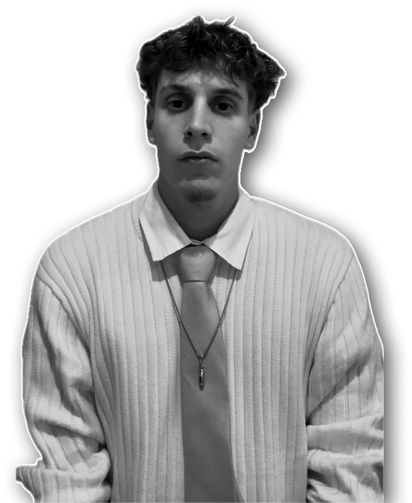

Bordeaux, France · Recherche d’alternance
MaëlLLADO
Étudiant en informatique · Développeur Full Stack
Développeur Full Stack curieux et polyvalent, je conçois des solutions de bout en bout, du Front-end au Back-end, jusqu’au déploiement, à la gestion des serveurs, des bases de données et des outils d’administration.

01 À propos
À propos de moi
Je construis des applications complètes — interface, API, base de données — et je les mets moi-même en production sur mon serveur. Ce portfolio en est la preuve : React, Express, PostgreSQL, Docker, derrière Cloudflare.
- FORMATION
- Ynov Campus Bordeaux
- DIPLÔME
- Bac Pro SN option RISC — Très Bien
- LOCALISATION
- Bordeaux, France
- RECHERCHE
- Alternance / stage en développement
02 Parcours
Parcours et expériences
- Aujourd’hui
Ynov Campus Bordeaux — 2ᵉ année
Étudiant en informatique
- Stage
Snark Factory
Développement web
- Stage
Maintenance & boutique spécialisée
Support et matériel informatique
- Lycée professionnel
Cybersécurité & Réseaux
Premiers pas dans le monde de l’informatique
03 Projets
Projets

Face Recognition

CTF

One Piece DLE

Cloud Perso

Tech Talk
04 Contact
Discutons de votre projet
Je cherche une alternance en développement. Un message suffit.
Écrire à Maël